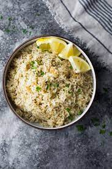

Lemon Brown Rice with Garlic and Thyme

This tangy brown rice dish can be served warm, or chilled as a salad or side.
Ingredients
- 2 tablespoons unsalted butter
- 1 shallot, finely chopped
- 1 1/2 cups short-grain brown rice
- 3 cups vegetable stock
- Kosher salt
- Freshly ground pepper
- 2 tablespoons extra-virgin olive oil
- 1 tablespoon garlic, minced
- 2 tablespoons chopped fresh thyme
- 1/2 teaspoon red chili flakes
- 2 tablespoons fresh lemon juice
- zest of one lemon
Steps
- In a large sauce pan, melt the butter. Add the shallot and cook over moderate heat, stirring occasionally until softened, about 5 minutes. Add the rice and cook, stirring, for 3 minutes. Add the stock, salt, and pepper and bring to a boil. Cover and simmer over low heat until the broth is absorbed and the rice is tender, about 45 minutes. Remove from the heat and let stand, covered, for 10 minutes. Fluff with a fork.
- In a skillet, heat the oil, garlic, thyme, and chili flakes over moderately low heat. Cook until garlic is just beginning to brown, about 3 minutes.
- Remove from heat and add lemon zest and juice. Season with salt and pepper. Toss with cooked rice and serve.